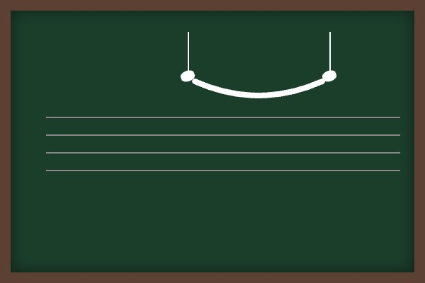
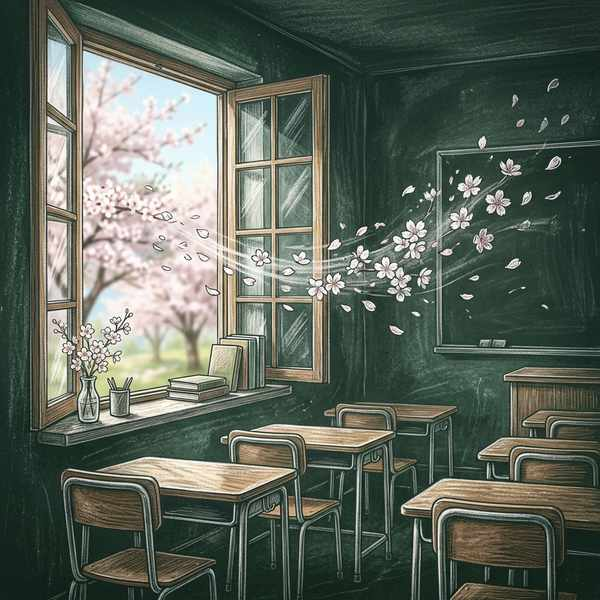

中学音楽（歌唱曲）
歌唱曲⑨ (HEIWAの鐘・椰子の実・旅立ちの日に)
平和への強い祈りを込めた「HEIWAの鐘」、明治時代の名詩に曲を付けた「椰子の実」、そして全国の小中学校で最も歌われている卒業ソング「旅立ちの日に」の3曲を解説します。テストで狙われる調号の数や、テンポの急激な変化を示す用語（Più mosso）などを重点的に整理しましょう！
1. 「HEIWAの鐘」の要点整理
沖縄から平和の願いを発信する、熱く躍動感あふれる合唱曲。
① 基本データ
- 作詞・作曲：仲里幸広（なかざとゆきひろ）（沖縄県出身のシンガーソングライター）
- 拍子：4分の4拍子
- 調：変イ長調（へんいちょうじょう）
- 調号の数（テスト必出！） ➔ 変イ長調では、フラット「♭」がシ・ミ・ラ・レに「4つ」つきます。
② 登場する音楽記号
メッゾ フォルテ (mf)
意味：少し強く
クレシェンド（cresc.）
意味：だんだん強く

左：同じ高さの音をつなぐタイ（Tie） ／ 右：D.S. (ダル・セーニョ)（セーニョ記号 𝄲 に戻る）
2. 「椰子の実（やしのみ）」の要点整理
流れ着いた椰子の実を見て、遠い故郷や人生を想起する美しい日本歌曲。
① 基本データ
- 作詞：島崎藤村（しまざきとうそん）（詩集『若菜集』に収録されている詩です）
- 作曲：大中寅二（おおなかとらじ）
- 拍子：4分の4拍子
② 歌詞の意味（テスト記述対策！）
- 汝（なれ）はそも ➔ おまえはそもそも（椰子の実に対して話しかけるような表現です）
- 浮寝（うきね） ➔ 落ち着いて眠れないこと（波に漂いながら眠る頼りない様子を、自分自身の漂流生活と重ねています）
③ 登場する音楽記号
- テヌート（－） ➔ その音の長さを十分に保って演奏する。
- シャープ（♯） ➔ その音を半音上げる。
- ブレス記号（∨） ➔ 息つぎをする
- クレシェンド（cresc.）＆デクレシェンド（decresc.）
3. 「旅立ちの日に」の要点整理

埼玉県秩父市の影森中学校で、教職員たちの手によって誕生した感動の卒業ソング。
① 基本データ
- 作詞：小嶋登（こじまのぼる）（当時の影森中学校の校長先生）
- 作曲：坂本浩美（さかもとひろみ）（当時の影森中学校の音楽の先生。現・高橋浩美さん）
- 拍子：4分の4拍子
- 合唱形態：混声三部合唱（ソプラノ・アルト・男声の3部構成）
- ソプラノ：女声の高い声のパート
- アルト：女声の低い声のパート
② テストに出る楽典記号と速度用語
- 8分休符（はちぶきゅうふ） ➔ 半拍休む
- Più mosso（ピウ・モッソ）➔ 記述注意！
- 読み方：ピウ モッソ
- 意味：今までより速く（サビの「飛び立とう未来信じて」の部分で、前向きな疾走感を出すためにテンポを速くします）
🔥 定期テスト対策・暗記のコツ
① Più mosso（ピウ・モッソ）の読みと意味
「旅立ちの日に」の速度変化用語 Più mosso は非常にテストで問われやすいです。意味である「今までより速く」と読み方を正確に漢字・カタカナで記述できるようにしておきましょう。
② 「HEIWAの鐘」の調号の数
変イ長調（A♭メジャー）では、フラットが「4つ」（シ・ミ・ラ・レ）つきます。調の名前とフラットの個数を正確に一致させて記憶しておきましょう！
③ 誕生の地「影森中学校」と作詞・作曲者
「旅立ちの日に」は、音楽教諭の坂本浩美先生が作ったメロディに、校長だった小嶋登先生が荒れていた学校を立て直すために生徒への愛を込めて詞を書いた背景があります。この実話から、「小嶋登（作詞）」「坂本浩美（作曲）」の組み合わせがよく狙われます。